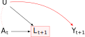
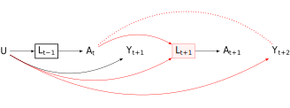

![]()
Purpose
Causation occurs in time. Therefore, investigating the relationship between cause and effect requires time series data.
Causality is also dynamic. Where there is Treatment-Confounder Feedback, the relationship between cause and effect cannot be identified using standard regression methods, including multi-level regression and structural equation models. Instead, special methods - “G-methods” - are needed.
Here, I use three causal graphs to describe a problem of treatment-confounder feedback, and direct readers to G-methods for its solution.
My assumptions about you
- You are interested in psychological science.
- You understand how to read causal graphs 1
- Your “go-to” method for time-series analysis is either a latent growth curve or a multi-level model.
Confounding by Common Cause
Suppose we wish to compute the causal effect of treatment \(A\) on outcome \(Y\). Because \(L\) is a common cause of both \(A\) and \(Y\), \(L\) will lead to an association between \(A\) and \(Y\). We face confounding by common cause. The good news: where \(L\) is measured, a regression model that conditions on \(L\) will break the association between \(A\) and \(Y\). Again, causation occurs in time. We index measured nodes to ensure our data adhere to time’s arrow
reveal code
\begin{tikzpicture}[squarednode/.style={rectangle, draw=gray!90, fill=gray!5, auto}]
\tikzset{>=latex}
\tikzstyle{Arrow} = [->, thin, preaction = {decorate}]
\tikzstyle{DoubleArrow} = [-, preaction = {decorate}]
\node[squarednode] (1) {$L_{t-1}$};
\node[right =of 1] (2) {$A_{t}$};
\node[right =of 2] (3) {$Y_{t+1}$};
\draw[Arrow,bend left] (1) to (3);
\draw[Arrow] (1) to (2);Confounding by Over-Conditioning
Suppose \(L_{t+1}\) is an effect of \(A_{t}\). To condition on the common effect will induce a spurious association between \(A_t\) and \(Y_{t+1}\) through the unmeasured confounder \(U\) (red path). We may avoid this problem by excluding \(L_{t+1}\) from our regression model. To know whether exclusion is warranted requires indexing the relative occurrences of \(A\) and \(L\). However, without time-series data, we cannot generally know whether \(L\) is a cause of \(A\) or its effect. Figures 1 and 2 illustrate the importance of collecting time-series data to infer causality. Although psychological scientists are familiar with adjustment by regression to address confounding by common cause, we are less familiar with the hazards of over-conditioning. Generally, confounding control in any observational science requires time series data.
reveal code
\begin{tikzpicture}[squarednode/.style={rectangle, draw=red!60, fill=red!5}, scale = 4]
\tikzset{>=latex}
\tikzstyle{Arrow} = [->, thin, preaction = {decorate}]
\tikzstyle{DoubleArrow} = [-, dotted, preaction = {decorate}]
\node[] (0) {$U$};
\node[ below =of 0] (1) {$A_t$};
\node[squarednode, right =of 1] (2) {$L_{t+1}$};
\node[right =of 2] (3) {$Y_{t+1}$};
\draw[Arrow,bend left=25, red] (0) to (3);
\draw[Arrow] (0) to (2);
\draw[Arrow] (1) to (2);
\draw[DoubleArrow, bend right=20, red] (0) to (1);
Confounding control for Treatment-Confounder Feedback: Damned if you condition damned if you do not.
Suppose we collect time series data. Suppose further that conditioning on \(L\) blocks an unmeasured common cause \(U\) of future treatments \(A\) and future outcomes \(Y\). Suppose further, as in Figure 2, past states of \(A\) affect future states of \(L\). Notice, regression faces a damned-if-we-do-damned-if-we-don’t adjustment challenge. On the one hand, to avoid confounding by a common cause we must adjust for \(L\) at all time points. On the other hand, adjusting for \(L_{t+1}\) induces confounding by over-conditioning (paths in red). **Regression, including multi-level regression and structural equation models, must be abandoned.* There are alternatives to regression called G-methods that may address treatment-confounder feedback. One of these methods, the Marginal Structural Model, replaces \(L\) with inverse probability weights for the exposure. G-methods are described in Chapters 12 and 13 of Hernan and Robin’s[Hernan and Robins (2023)]2
reveal code
\begin{tikzpicture}[squarednode/.style={rectangle, draw=red!60, fill=red!5}, scale = 4]
\tikzset{>=latex}
\tikzstyle{Arrow} = [->, thin, preaction = {decorate}]
\tikzstyle{DoubleArrow} = [-, thick, dotted, preaction = {decorate}]
\node[draw=black, thick] (1) {L$_{t-1}$};
\node[right =of 1] (2) {A$_{t}$};
\node[right =of 2] (3) {Y$_{t+1}$};
\node[squarednode, right =of 3] (4) {L$_{t+1}$};
\node[right =of 4] (5) {A$_{t+1}$};
\node[right =of 5] (6) {Y$_{t+2}$};
\node[left =of 1] (7) {U};
\draw[Arrow] (1) -- (2);
\draw[Arrow] (4) -- (5);
\draw[Arrow] (7) to (1);
\draw[DoubleArrow, red, bend left=40] (2) to (6);
\draw[Arrow, bend right, red] (7) to (6);
\draw[Arrow, bend right, red] (7) to (4);
\draw[Arrow, bend right] (7) to (3);
\draw[Arrow, bend left, red] (2) to (4);
Importance
I write this report to encourage psychological scientists to (1) collect time-series data and (2) address treatment-confounder feedback by employing G-methods. I do not write this report to cast stones. My published work offers ample illustrations of the problems that I describe here. On a positive note, a causal revolution in psychological science is upon us. Our best science remains ahead of us (VanderWeele 2015).
References
Footnotes
Reuse
Citation
@article{bulbulia2022,
author = {Joseph Bulbulia},
title = {On the {Problem} of {Treatment} {Confounder} {Feedback}},
journal = {PsyArXiv},
date = {2022-11-06},
url = {https://psyarxiv.com/tjnvh/},
doi = {10.31234/osf.io/tjnvh},
langid = {en}
}